Basic Inferential Statistics using R
Martin Schweinberger
2020-09-29

Introduction
This tutorial introduces the basic statistical techniques for inferential statistics for hypothesis testing with R. The R-markdown document of this tutorial can be downloaded here. The first part of this tutorial focuses on basic non-parametric tests such as Fisher’s Exact test, the second part focuses on the \(\chi\)2 family of tests, and the third part focuses on simple linear regression.
Preparation and session set up
This tutorial is based on R. If you have not installed R or are new to it, you will find an introduction to and more information how to use R here. For this tutorials, we need to install certain packages from an R library so that the scripts shown below are executed without errors. Before turning to the code below, please install the packages by running the code below this paragraph. If you have already installed the packages mentioned below, then you can skip ahead ignore this section. To install the necessary packages, simply run the following code - it may take some time (between 1 and 5 minutes to install all of the libraries so you do not need to worry if it takes some time).
# install libraries
install.packages(c("stringr", "VGAM", "fGarch", "stringr", "cfa", "dplyr",
"gridExtra", "calibrate", "car", "ggplot2", "QuantPsyc",
"DT"))Once you have installed R, R-Studio, and have also initiated the session by executing the code shown above, you are good to go.
1 Fisher’s Exact Test
Non-Parametric Tests do not require the data (or the errors of the dependent variable, to be more precise) to be distributed normally. Tests that do not require normal data are referred to as non-parametric tests (tests that require the data to be distributed normally are analogously called parametric tests). We focus on non-parametric tests first, as this family of test in frequently used in linguistics. In the later part of this section, we will focus on regression modeling where assumptions of about the data become more important.
Fisher’s Exact test is very useful because it does not rely on distributional assumptions relying on normality. Instead, Fisher’s Exact Test calculates the probabilities of all possible outcomes and uses these to determine significance. To understand how a Fisher’s Exact test, we will use a very simple example.
Imagine you are interested in adjective modification and you want to find out if very and truly differ in their collocational preferences. So you extract all instances of cool, all instances of very, and all instances of truly from a corpus. Now that you have gathered this data, you want to test if truly and very differ with respect to their preference to co-occur with cool. Accordingly, you tabulate the results and get the following table.
To perform a Fisher’s Exact test, we first need to create a table with these results in R.
# create table
coolmx <- matrix(
c(5, 17, 40, 41),
nrow = 2, # number of rows of the table
# def. dimension names
dimnames = list(
Adverbs = c("truly", "very"),
Adjectives = c("cool", "other adjective"))
)
# inspect data
datatable(coolmx, rownames = FALSE, filter="none", options = list(pageLength = 5, scrollX=T))Once we have the created a matrix with these numbers, we can perform the Fisher’s Exact test to see if very and truly differ in their preference to co-occur with cool. The null hypothesis is that there is no difference between the adverbs.
# perform test
fisher.test(coolmx)##
## Fisher's Exact Test for Count Data
##
## data: coolmx
## p-value = 0.03024
## alternative hypothesis: true odds ratio is not equal to 1
## 95 percent confidence interval:
## 0.08015294 0.96759831
## sample estimates:
## odds ratio
## 0.3048159The results of the Fisher’s Exact test show that the p-value is lower than .05, which means we reject the null hypothesis, and we are therefore justified in assuming that very and truly differ in their collocational preferences to co-occur with cool.
2 Ranking and Sign-Based Non-Parametric Tests
If the depended variable is neither nominal nor categorical, but ordinal (that is if the dependent variable represents an order factor such as ranks), using a chi-square test is not warranted. In such cases it is advisable to apply tests that are designed to handle ordinal data. In the following, we will therefore briefly touch on bi-variate tests that can handle ordinal dependent variables.
Mann-Whitney U-Test / Wilcoxon Rank Sum-Test
It is a rather frequent case that numeric depend variables are transformed or converted into ordinal variables because the distribution of residuals does not allow the application of a linear regression. Because we are dealing with ordinal data, the application of a chi-square test is unwarranted and we need to use another test. In such cases, the Mann-Whitney U-test (also called Wilcoxon rank sum-test) can be used. The Mann-Whitney U-test can also be used if the groups under investigation represent identical participants that are tested under two conditions.
Imagine we wanted to determine if two language families differed with respect to the size of their phoneme inventories. You have already ranked the inventory sizes and would now like to now if language family correlates with inventory size. To answer this question, you create the table shown below.
# create table
rank <- c(1,3,5,6,8,9,10,11,17,19, 2,4,7,12,13,14,15,16,18,20)
groups <- c(rep("Lang.Fam.1", 10), rep("Lang.Fam.2", 10))
language_family_tb <- data.frame(groups, rank)
# inspect data
datatable(language_family_tb, rownames = FALSE, filter="none", options = list(pageLength = 5, scrollX=T))We will also briefly inspect the data visually using a box plot.
boxplot(rank ~ groups, col = c("orange", "darkgrey"), main = "", data = language_family_tb)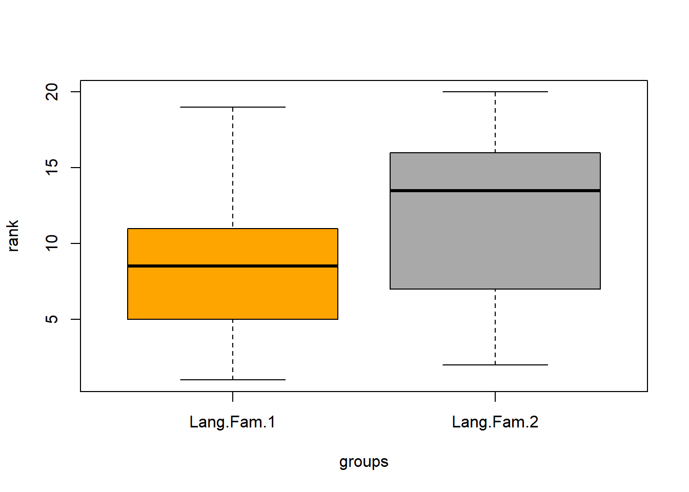
To use Mann-Whitney U test, the dependent variable (Rank) must be ordinal and independent variable (Group) must be a binary factor. We briefly check this by inspecting the structure of the data.
# perform test
str(language_family_tb)## 'data.frame': 20 obs. of 2 variables:
## $ groups: chr "Lang.Fam.1" "Lang.Fam.1" "Lang.Fam.1" "Lang.Fam.1" ...
## $ rank : num 1 3 5 6 8 9 10 11 17 19 ...As the variables are what we need them to be, we can now perform the Mann-Whitney U test on the table. The null hypothesis is that there is no difference between the 2 groups.
# perform test
wilcox.test(language_family_tb$rank ~ language_family_tb$groups) ##
## Wilcoxon rank sum exact test
##
## data: language_family_tb$rank by language_family_tb$groups
## W = 34, p-value = 0.2475
## alternative hypothesis: true location shift is not equal to 0Since the p-value is greater than 0.05, we fail to reject the null hypothesis. The results of the Wilcoxon rank sum test tell us that the two language families do not differ significantly with respect to their phoneme inventory size.
The Wilcoxon rank sum test can also be used with continuity correction. A continuity correction is necessary when both variables represent numeric values that are non-normal. In the following example, we want to test if the reaction time for identifying a word as real is correlated with its token frequency.
For this example, we generate data is deliberately non-normal.
# activate packages
library(fGarch)
library(gridExtra)
library(ggplot2)
# generate non-normal skewed numeric data
r <- .1
frequency <- rsnorm(100,0,2,4)
normal_reaction <- rsnorm(100,0,2,4)
reaction_times <- frequency*r+normal_reaction*sqrt(1-r^2)
# combine into data frame
wxdata <- data.frame(frequency, normal_reaction, reaction_times)
# plot data
p1 <- ggplot(wxdata, aes(frequency)) + # define data
geom_density(fill = "orange", alpha = .2) + # define plot type (density)
theme_bw() + # black + white background
labs(y="Density", x = "Frequency") + # axes titles
coord_cartesian(ylim = c(0, .5), # define y-axis coordinates
xlim = c(-5, 10)) # define x-axis coordinates
p2 <- ggplot(wxdata, aes(reaction_times)) +
geom_density(fill = "lightgray", alpha = .2) +
theme_bw() +
labs(y="Density", x = "Reaction Time") +
coord_cartesian(ylim = c(0, .5), xlim = c(-5, 10))
grid.arrange(p1, p2, nrow = 1) # 2 plots in one window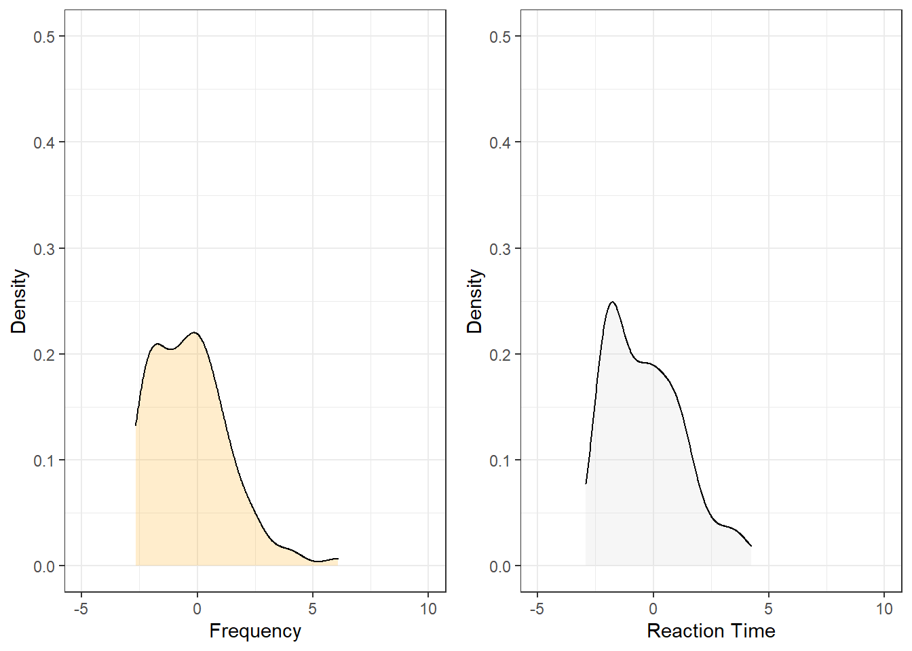
Both variables are skewed (non-normally distributed) but we can use the Wilcoxon rank sum test with continuity correction which takes the skewness into account. The null hypothesis is that there is no difference between the 2 groups.
# perform test
wilcox.test(reaction_times, frequency) ##
## Wilcoxon rank sum test with continuity correction
##
## data: reaction_times and frequency
## W = 5056, p-value = 0.8921
## alternative hypothesis: true location shift is not equal to 0The p-value is greater than 0.05, therefore we cannot reject the null hypothesis. There is no statistically significant evidence to assume the groups are different.
When performing the Wilcoxon rank sum test with data that represent the same individuals that were tested under two condition, i.e. if the samples are dependent, then the argument “paired” has to be “TRUE”.
In this example, the same individuals had to read tongue twisters when they were sober and when they were intoxicated. A Wilcoxon signed rank test with continuity correction is used to test if the number of errors that occur when reading tongue twisters correlates with being sober/intoxicated. Again, we create fictitious data.
# create data
sober <- sample(0:9, 15, replace = T)
intoxicated <- sample(3:12, 15, replace = T)
# tabulate data
intoxtb <- data.frame(sober, intoxicated)
# inspect data
datatable(intoxtb, rownames = FALSE, filter="none", options = list(pageLength = 15, scrollX=T))Now, we briefly plot the data.
intoxtb2 <- data.frame(c(rep("sober", nrow(intoxtb)), rep("intoxicated", nrow(intoxtb))),
c(intoxtb$sober, intoxtb$intoxicated))
colnames(intoxtb2) <- c("State", "Errors")
ggplot(intoxtb2, aes(State, Errors)) +
geom_boxplot(fill = c("orange", "darkgrey"), width=0.5) +
labs(y = "Number of errors", x = "State") +
theme_bw()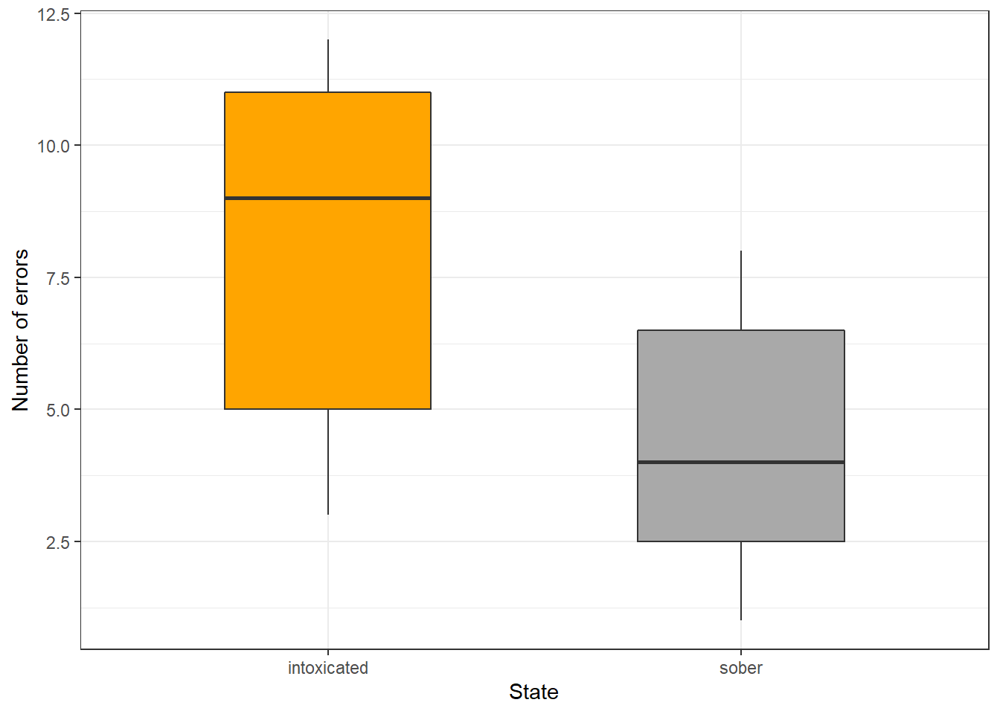
The boxes indicate a significant difference. Finally, we perform the Wilcoxon signed rank test with continuity correction. The null hypothesis is that the two groups are the same.
# perform test
wilcox.test(intoxtb$sober, intoxtb$intoxicated, paired=T) ##
## Wilcoxon signed rank test with continuity correction
##
## data: intoxtb$sober and intoxtb$intoxicated
## V = 44, p-value = 0.944
## alternative hypothesis: true location shift is not equal to 0The p-value is lower than 0.05 (rejecting the null hypothesis) which means that the number of errors when reading tongue twisters is affected by one’s state (sober/intoxicated) - at least in this fictitious example.
Kruskal-Wallis Rank Sum Test
The Kruskal-Wallis rank sum test is a type of ANOVA (Analysis of Variance). For this reason, the Kruskal Wallis Test is also referred to as a “one-way Anova by ranks” which can handle numeric and ordinal data.
In the example below, uhm represents the number of filled pauses in a short 5 minute interview while speaker represents whether the speaker was a native speaker or a learner of English. As before, the data is generated and thus artificial.
# create data
uhms <- c(15, 13, 10, 8, 37, 23, 31, 52, 11, 17)
speaker <- c(rep("Learner", 5), rep("NativeSpeaker", 5))
# create table
uhmtb <- data.frame(speaker, uhms)
# inspect data
datatable(uhmtb, rownames = FALSE, filter="none", options = list(pageLength = 10, scrollX=T))Now, we briefly plot the data.
ggplot(uhmtb, aes(speaker, uhms)) +
geom_boxplot(fill = c("orange", "darkgrey")) +
theme_bw() +
labs(x = "Speaker type", y = "Errors")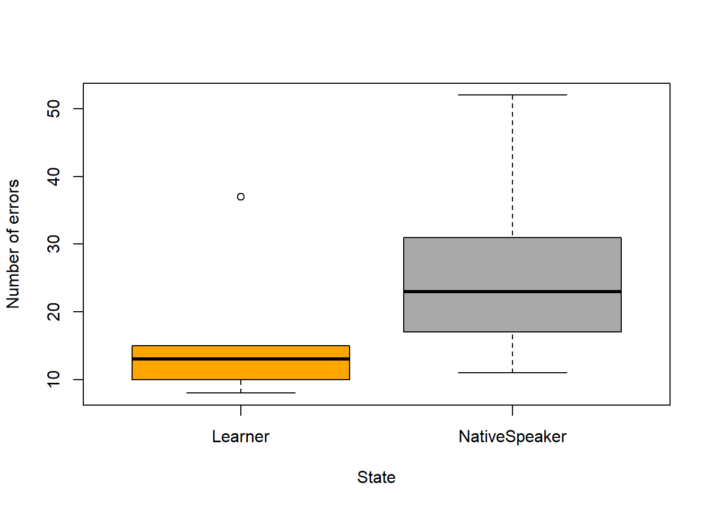
Now, we test for statistical significance. The null hypothesis is that there is no difference between the groups.
kruskal.test(uhmtb$speaker~uhmtb$uhms) ##
## Kruskal-Wallis rank sum test
##
## data: uhmtb$speaker by uhmtb$uhms
## Kruskal-Wallis chi-squared = 9, df = 9, p-value = 0.4373The p-value is greater than 0.05, therefore we fail to reject the null hypothesis. The Kruskal-Wallis test does not report a significant difference for the number of uhms produced by native speakers and learners of English in the fictitious data.
The Friedman Rank Sum Test
The Friedman rank sum test is also called a randomized block design and it is used when the correlation between a numeric dependent variable, a grouping factor and a blocking factor is tested. The Friedman rank sum test assumes that each combination of the grouping factor (Gender) and the blocking factor (Age) occur only once. Thus, imagine that the values of uhms represent the means of the respective groups.
# create data
uhms <- c(7.2, 9.1, 14.6, 13.8)
gender <- c("Female", "Male", "Female", "Male")
age <- c("Young", "Young", "Old", "Old")
# create table
uhmtb2 <- data.frame(gender, age, uhms)
# inspect data
datatable(uhmtb2, rownames = FALSE, filter="none", options = list(pageLength = 10, scrollX=T))We now perform the Friedman rank sum test.
friedman.test(uhms ~ age | gender, data = uhmtb2)##
## Friedman rank sum test
##
## data: uhms and age and gender
## Friedman chi-squared = 2, df = 1, p-value = 0.1573In our example, age does not affect the use of filled pauses even if we control for gender as the p-value is higher than .05.
3 (Pearsons’s) Chi-Square Test
One of the most frequently used statistical test in linguistics is the \(\chi\)2 test (or Pearsons’s chi-square test, chi-squared test, or chi-square test). We will use a simple, practical example to explore how this test works. In this example, we will test whether speakers of American English (AmE) and speakers of British English (BrE) differ in their use of the near-synonyms sort of and kind of as in “He’s sort of stupid” and “He’s kind of stupid”. As a first step, we formulate the hypothesis that we want to test (H1) and its Nullhypothesis (H0). The Alternative- or Test Hypothesis reads:
H1: Speakers of AmE and BrE differ with respect to their preference for sort of und kind of.
while the Null Hypothesis (H0) states
H0: Speakers of AmE and BrE do not differ with respect to their preference for sort of und kind of.
The H0 claims the non-existence of something (which is the more conservative position) and in our example the non-existence of a correlation between variety of English and the use of sort of und kind of. The question now arises what has to be the case in order to reject the H0 in favour of the H1.
To answer this question, we require information about the probability of error, i.e. the probability that the H0 does indeed hold for the entire population. Before performing the chi-square test, we follow the convention that the required significance level is 5 percent. In other words, we will reject the H0 if the likelihood for the H\(_{0}\) being true is less than 5 percent given the distribution of the data. In that case, i.e. in case that the likelihood for the H0 being true is less than 5 percent, we consider the result of the chi-square test as statistically significant. This means that the observed distribution makes it very unlikely that there is no correlation between the variety of English and the use of sort of and kind of.
Let us now assume that we have performed a search for sort of and kind of in two corpora representing American and British English and that we have obtained the following frequencies:
In a first step, we now have to calculate the row and column sums of our table.
Next, we calculate, the values that would have expected if there was no correlation between variety of English and the use of sort of and kind of. In order to get these “expected” frequencies, we apply the equation below to all cells in our table.
\(\frac{Column total*Row total}{Overall total}\)
In our example this means that for the cell with [+]BrE [+]kindof we get:
\(\frac{836*358}{1080} = \frac{299288}{1080} = 277.1185\)
For the entire table this means we get the following expected values:
In a next step, we calculate the contribution of each cell to the overall \(\chi\)2 value (\(\chi\)2 contribution). To get \(\chi\)2 contribution for each cell, we apply the equation below to each cell.
\(\frac{(observed – expected)^{2}}{expected}\)
In our example this means that for the cell with [+]BrE [+]kindof we get:
\(\frac{(181 – 277.1185)^{2}}{277.1185} = \frac{-96.1185^{2}}{277.1185} = \frac{9238.766}{277.1185} = 33.33868\)
For the entire table this means we get the following \(\chi^{2}\) values:
The sum of \(\chi\)2 contributions in our example is 220.7339. To see if this value is statistically significant, we need to calculate the degrees of freedom because the \(\chi\) distribution differs across degrees of freedom. Degrees of freedom are calculated according to the equation below.
\(DF = (rows -1) * (columns – 1) = (2-1) * (2-1) = 1 * 1 = 1\)
In a last step, we check whether the \(\chi\)2 value that we have calculated is higher than a critical value (in which case the correlation in our table is significant). Degrees of freedom are relevant here because the critical values are dependent upon the degrees of freedom: the more degrees of freedom, the higher the critical value, i.e. the harder it is to breach the level of significance.
Since there is only 1 degree of freedom in our case, we need to consider only the first column in the table of critical values below.
Since the \(\chi\)2 value that we have calculated is much higher than the critical value provided for p<.05, we can reject the H0 and may now claim that speakers of AmE and BrE differ with respect to their preference for sort of und kind of.
Before we summarize the results, we will calculate the effect size which is a measure for how strong the correlations are.
Effect Sizes in Chi-Square
Effect sizes are important because they correlations may be highly significant but the effect between variables can be extremely weak. The effect size is therefore a measure how strong the correlation or the explanatory and predictive power between variables is.
The effect size measure for \(\chi\)2 tests can be either the \(\phi\)-coefficient (phi-coefficient) or Cramer’s \(\phi\) (Cramer’s phi). The \(\phi\)-coefficient is used when dealing with 2x2 tables while Cramer’s \(\phi\) is used when dealing with tables with more than 4 cells. The \(\phi\) coefficient can be calculated by using the equation below (N = overall sample size).
\(\phi = \sqrt{\frac{\chi^{2}}{N}}\)
In our case, this means:
\(\phi = \sqrt{\frac{220.7339}{1080}} = \sqrt{0.2043832} = 0.4520876\)
The \(\phi\) coefficient varies between 0 (no effect) and 1 (perfect correlation). For the division into weak, moderate and strong effects one can follow the division for \(\omega\) (small omega), so that with values beginning with .1 represent weak, values between 0.3 and .5 represent moderate and values above .5 represent strong effects (Bühner and Ziegler 2009, 266). So, in this example we are dealing with a medium-sized effect/correlation.
Chi-Square in R
Before we summarize the results, we will see how to perform a chi-square test in R. In addition to what we have done above, we will also visualize the data. To begin with, we will have a look at the data set (which is the same data we have used above).
# inspect data
datatable(chidata, rownames = FALSE, filter="none", options = list(pageLength = 10, scrollX=T), caption = "Critical chi values for 1 to 5 degrees of freedom")We will now visualize the data with an association. Bars above the dashed line indicate that a feature combination occurs more frequently than expected by chance. The width of the bars indicates the frequency of the feature combination.
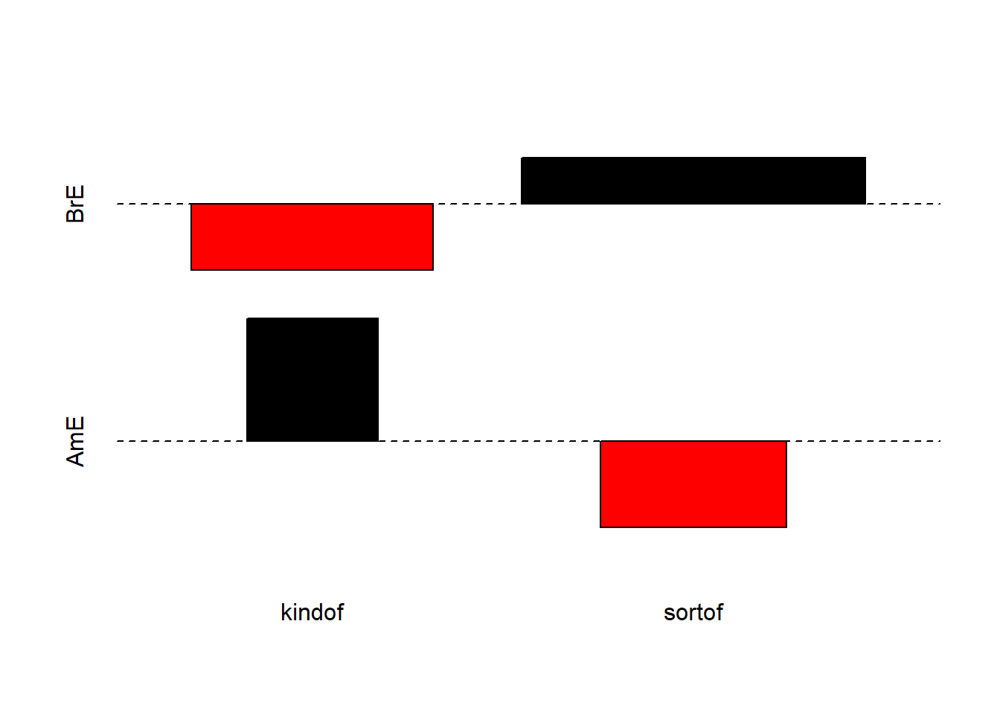
The fact that the bars are distributed complimentarily (top left red and below bar; top right black above bar; bottom left black above bar; bottom right red below bar) indicates that the use of “sort of” and “kind of” differs across AmE and BrE. We will check whether the mosaic plot confirms this impression.
mosaicplot(chidata, shade = TRUE, type = "pearson", main = "") # mosaic plotThe colour contrasts in the mosaic plot substantiate the impression that the two varieties of English differ significantly. To ascertain whether the differences are statistically significant, we can now apply the chi-square test.
chisq.test(chidata, corr = F) # perform chi square test##
## Pearson's Chi-squared test
##
## data: chidata
## X-squared = 220.73, df = 1, p-value < 2.2e-16The results reported by R are identical to the results we derived by hand and confirm that BrE and AmE differ significantly in their use of “sort of” and “kind of”. In a next step, we calculate the effect size.
# calculate effect size
sqrt(chisq.test(chidata, corr = F)$statistic / sum(chidata) * (min(dim(chidata))-1))## X-squared
## 0.4520877The phi coefficient of .45 shows that variety of English correlates moderately with the use of “sort of” and “kind of”. We will now summarize the results.
Summarizing Chi-Square Results
The results of our analysis can be summarised as follows: A \(\chi\)2-test confirms a highly significant correlation of moderate size between the variety of English and the use of the near-synonymous hedges sort of and kind of (\(\chi\)2 = 220.73, df = 1, p < .001***, \(\phi\) = .452).
Requirements of Chi-Square
Chi-square tests depend on certain requirements that, if violated, negatively affect the reliability of the results of the test. To provide reliable results, 80 percent of cells in a table to which the chi-square test is applied have to have expected values of 5 or higher and at most 20 percent of expected values can be smaller than 5 (see ???). In addition, none of the expected values can be smaller than 1 (see ???) because then, the estimation, which relies on the \(\chi\)2-distribution, becomes too imprecise to allow meaningful inferences (Cochran 1954).
If these requirements are violated, then the Fisher’s Exact Test is more reliable and offers the additional advantage that these tests can also be applied to data that represent very small sample sizes. When applying the Fisher’s Exact Test, the probabilities for all possible outcomes are calculated and the summed probability for the observed or more extreme results are determined. If this sum of probabilities exceeds five percent, then the result is deemed statistically significant.
Chi-Square Exercises
- Imagine you are interested in whether older or younger speakers tend to refer to themselves linguistically. The underlying hypothesis is that - contrary to common belief - older people are more narcissistic compared with younger people. Given this research question, perform a chi-square test and summarize the results on the data below.
- Imagine you are interested in whether young men or young women exhibit a preference for the word whatever because you have made the unsystematic, anecdotal observation that young men use this word more frequently than young women. Given this research question, perform a chi-square test and summarize the results on the data below.
- Find a partner and discuss the relationship between significance and effect size. Then, go and find another partner and discuss problems that may arise when testing the frequency of certain words compared with the overall frequency of words in a corpus.
4 Extensions of Chi-Square
In the following, we will have a look at tests and methods that can be used if the requirements for ordinary (Pearson’s) chi-square tests are violated and their use would be inappropriate
The Yates-Correction
If all requirements for ordinary chi-square tests are acceptable and only the sample size is the issue, then applying a so-called Yates-correction may be appropriate. This type of correction is applied in cases where the overall sample size lies in-between 60 and 15 cases ((???) 91). The difference between the ordinary chi-square and a Yates-corrected chi-square lies in the fact that the Yates-corrected chi-square is calculated according to the equation below.
\(\frac{(|observed – expected|-0.5)^{2}}{expected}\)
According to this formula, we would get the values shown below rather than the values tabulated above. It is important to note here that this is only a demonstration because a Yates-Correction would actually be inappropriate as our sample size exceeds 60 cases.
If the Yates-correction were applied, then this results in a slightly lower \(\chi\)2-value and thus in more conservative results compared with the traditional test according to Pearson.
4.1 Chi-Square within 2*k Tables{-}
Although the \(\chi\)2-test is widely used, it is often used inappropriately. This is especially the case when chi-square tests are applied to data representing tables with more than two rows and more than two columns. It is important to note that applying the common Pearson’s’ chi-square test to sub-tables of a larger table is inappropriate because, in such cases, a modified variant of Pearson’s’ chi-square test is warranted. We will go through two examples that represent different scenarios where we are dealing with subsamples of larger tables and a modified version of the \(\chi\)2-test should be used rather than Pearson’s’ chi-square.
In this first example, we are dealing with a table consisting of two columns and multiple rows, a so-called 2*k table (two-by-k table). In order to test if a feature combination, that is represented by a row in the 2*k table, is significantly more common compared with other feature combinations, we need to implement the \(\chi\)2-equation from (???).
In this example, we want to find out whether soft and hard X-rays differ in their effect on grasshopper larva. The question is whether the larva reach or do not reach a certain life cycle depending on whether they are exposed to soft X-rays, hard X-rays, light, or beta rays. The data for this example is provided below.
If we would apply an ordinary chi-square test, we would ignore that all data were collected together and using only a subsample would ignore the data set of which the subsample is part of. In other words, the subsample is not independent from the other data (as it represents a subsection of the whole data set). However, for exemplary reasons, we will apply an ordinary chi-square test first and then compare its results to results provided by the correct version of the chi-square test. In a first step, we create a table with all the data.
# create tdata
wholetable <- matrix(c(21, 14, 18, 13, 24, 12, 13, 30), byrow = T, nrow = 4)
colnames(wholetable) <- c("reached", "notreached") # add column names
rownames(wholetable) <- c("rsoft", "rhard", "beta", "light") # add row names
# inspect data
datatable(wholetable, rownames = FALSE, filter="none", options = list(pageLength = 10, scrollX=T))Now, we extract the subsample from the data.
subtable <- wholetable[1:2,] # extract subtable
# inspect data
datatable(subtable, rownames = FALSE, filter="none", options = list(pageLength = 10, scrollX=T))Next, we apply the ordinary chi-square test to the subsample.
# simple x2-test
chisq.test(subtable, corr = F)##
## Pearson's Chi-squared test
##
## data: subtable
## X-squared = 0.025476, df = 1, p-value = 0.8732Finally, we perform the correct chi-square test.
# load function for correct chi-square
source("https://slcladal.github.io/rscripts/x2.2k.r")
x2.2k(wholetable, 1, 2)## $Description
## [1] "rsoft against rhard by reached vs notreached"
##
## $`Chi-Squared`
## [1] 0.025
##
## $df
## [1] 1
##
## $`p-value`
## [1] 0.8744
##
## $Phi
## [1] 0.013
##
## $Report
## [1] "Conclusion: the null hypothesis cannot be rejected! Results are not significant!"Below is a table comparing the results of the two chi-square tests.
The comparison shows that, in this example, the results of the two tests are very similar but this may not always be the case.
4.2 Chi-Square within z*k Tables{-}
Another application in which the \(\chi\)2 test is often applied incorrectly is when ordinary Parsons’s \(\chi\)2 tests are used to test portions of tables with more than two rows and more than two columns, that is z*k tables (z: row, k: column). An example is discussed by Gries (2014) who also wrote the R Script for the correct version of the \(\chi\)2 test.
Let’s first load the data discussed in the example of Gries (2014) 9. The example deals with metaphors across registers. Based on a larger table, a \(\chi\)2 confirmed that registers differ with respect to the frequency of EMOTION metaphors. The more refined question is whether the use of the metaphors EMOTION IS LIGHT and EMOTION IS A FORCE OF NATURE differs between spoken conversation and fiction.
# create table
wholetable <- matrix(c(8, 31, 44, 36, 5, 14, 25, 38, 4, 22, 17, 12, 8, 11, 16, 24), ncol=4)
attr(wholetable, "dimnames")<-list(Register=c("acad", "spoken", "fiction", "new"),
Metaphor = c("Heated fluid", "Light", "NatForce", "Other"))Based on the table above, we can extract the following subtable.
If we used an ordinary Pearson’s \(\chi\)2 test (the use of which would be inappropriate here), it would reveal that spoken conversations do not differ significantly from fiction in their use of EMOTION IS LIGHT and EMOTION IS A FORCE OF NATURE (\(\chi\)2=3.3016, df=1, p=.069, \(\phi\)=.2057).
# create table
subtable <- matrix(c(14, 25, 22, 17), ncol=2)
chisq.results <- chisq.test(subtable, correct=FALSE) # WRONG!
phi.coefficient = sqrt(chisq.results$statistic / sum(subtable) * (min(dim(subtable))-1))
chisq.results##
## Pearson's Chi-squared test
##
## data: subtable
## X-squared = 3.3016, df = 1, p-value = 0.06921phi.coefficient## X-squared
## 0.2057378The correct analysis takes into account that it is a subtable that is not independent of the overall table. This means that the correct analysis should take into account the total number of cases, as well as the row and column totals [vgl.@bortz1990verteilungsfreie 144-148].
In order to perform the correct analysis, we must either implement the equation proposed in (???) 144-148 or read in the function written by Gries (2014) and apply it to the subtable.
# load function for chi square test for subtables
source("https://slcladal.github.io/rscripts/sub.table.r")
# apply test
results <- sub.table(wholetable, 2:3, 2:3, out="short")
# inspect results
results## $`Whole table`
## Metaphor
## Register Heated fluid Light NatForce Other Sum
## acad 8 5 4 8 25
## spoken 31 14 22 11 78
## fiction 44 25 17 16 102
## new 36 38 12 24 110
## Sum 119 82 55 59 315
##
## $`Sub-table`
## Metaphor
## Register Light NatForce Sum
## spoken 14 22 36
## fiction 25 17 42
## Sum 39 39 78
##
## $`Chi-square tests`
## Chi-square Df p-value
## Cells of sub-table to whole table 7.2682190 3 0.06382273
## Rows (within sub-table) 0.2526975 1 0.61518204
## Columns (within sub-table) 3.1519956 1 0.07583417
## Contingency (within sub-table) 3.8635259 1 0.04934652The results show that the difference is, in fact, statistically significant (\(\chi^{2}\)=3.864, df=1, p=.0
Configural Frequency Analysis (CFA)
# load library
library(cfa)
# load data
cfadata <- read.delim("https://slcladal.github.io/data/cfadata.txt",
header = T, sep = "\t")
# inspect data
datatable(cfadata, rownames = FALSE, filter="none", options = list(pageLength = 10, scrollX=T))In a next step, we define the configurations and separate them from the counts.
# load library
library(dplyr)
# define configurations
configs <- cfadata %>%
select(Variety, Age, Gender, Class)
# define counts
counts <- cfadata$FrequencyNow that configurations and counts are separated, we can perform the configural frequency analysis.
# perform cfa
cfa(configs,counts) ##
## *** Analysis of configuration frequencies (CFA) ***
##
## label n expected Q chisq
## 1 American Old Man Working 9 17.269530 0.0074991397 3.959871781
## 2 American Young Man Middle 20 13.322419 0.0060338993 3.346996519
## 3 British Old Woman Working 33 24.277715 0.0079603059 3.133665860
## 4 British Young Woman Middle 12 18.728819 0.0061100471 2.417504403
## 5 American Young Woman Middle 10 6.362422 0.0032663933 2.079707490
## 6 British Old Man Working 59 50.835658 0.0076361897 1.311214959
## 7 British Young Man Middle 44 39.216698 0.0044257736 0.583424432
## 8 American Old Woman Middle 81 76.497023 0.0043152503 0.265066491
## 9 British Old Woman Middle 218 225.181379 0.0080255135 0.229025170
## 10 American Old Man Middle 156 160.178850 0.0043537801 0.109020569
## 11 American Old Woman Working 8 8.247454 0.0002225797 0.007424506
## 12 British Old Man Middle 470 471.512390 0.0023321805 0.004851037
## p.chisq sig.chisq z p.z sig.z
## 1 0.04659725 FALSE -2.1267203 0.98327834 FALSE
## 2 0.06732776 FALSE 1.7026500 0.04431680 FALSE
## 3 0.07669111 FALSE 1.6871254 0.04578962 FALSE
## 4 0.11998594 FALSE -1.6845116 0.95395858 FALSE
## 5 0.14926878 FALSE 1.2474422 0.10611771 FALSE
## 6 0.25217480 FALSE 1.1002146 0.13561931 FALSE
## 7 0.44497317 FALSE 0.6962784 0.24312726 FALSE
## 8 0.60666058 FALSE 0.4741578 0.31769368 FALSE
## 9 0.63224759 FALSE -0.5726832 0.71657040 FALSE
## 10 0.74126197 FALSE -0.3993470 0.65518123 FALSE
## 11 0.93133480 FALSE -0.2612337 0.60304386 FALSE
## 12 0.94447273 FALSE -0.1217934 0.54846869 FALSE
##
##
## Summary statistics:
##
## Total Chi squared = 17.44777
## Total degrees of freedom = 11
## p = 2.9531e-05
## Sum of counts = 1120
##
## Levels:
##
## Variety Age Gender Class
## 2 2 2 2Hierarchical Configural Frequency Analysis (HCFA)
A hierarchical alternative to CFA is Hierarchical Configural Frequency Analysis (HCFA). In contrast to CFA, in HCFA, the data is assumed to be nested! We begin by defining the configurations and separate them from the counts.
# load library
library(dplyr)
# define configurations
configs <- cfadata %>%
select(Variety, Age, Gender, Class)
# define counts
counts <- cfadata$FrequencyNow that configurations and counts are separated, we can perform the hierarchical configural frequency analysis.
# perform cfa
hcfa(configs,counts) ##
## *** Hierarchical CFA ***
##
## Overall chi squared df p order
## Variety Age Class 12.218696 4 0.01579696 3
## Variety Gender Class 8.773578 4 0.06701496 3
## Variety Age Gender 7.974102 4 0.09253149 3
## Variety Class 6.078225 1 0.01368582 2
## Variety Class 6.078225 1 0.01368582 2
## Age Gender Class 5.164357 4 0.27084537 3
## Variety Age 4.466643 1 0.03456284 2
## Variety Age 4.466643 1 0.03456284 2
## Age Gender 1.934543 1 0.16426233 2
## Age Gender 1.934543 1 0.16426233 2
## Age Class 1.673538 1 0.19578534 2
## Age Class 1.673538 1 0.19578534 2
## Gender Class 1.546666 1 0.21362833 2
## Gender Class 1.546666 1 0.21362833 2
## Variety Gender 1.120155 1 0.28988518 2
## Variety Gender 1.120155 1 0.28988518 2According to the HCFA, only a single configuration (Variety : Age : Class) is significant (X2 = 12.21, p = .016).
5 Simple Linear Regression
This section focuses on a very widely used statistical method which is called regression. Regressions are used when we try to understand how independent variables correlate with a dependent or outcome variable. So, if you want to investigate how a certain factor affects an outcome, then a regression is the way to go. We will have a look at two simple examples to understand what the concepts underlying a regression mean and how a regression works. The R-Code, that we will use, is adapted from Field, Miles, and Field (2012) - which is highly recommended for understanding regression analyses! In addition to Field, Miles, and Field (2012), there are various introductions which also focus on regression (among other types of analyses), for example, Gries (2009), Levshina (2015), Wilcox (2009) - Baayen (2008) is also very good but probably not the first book one should read about statistics.
Introduction
Although the basic logic underlying regressions is identical to the conceptual underpinnings of analysis of variance (ANOVA), a related method, sociolinguistists have traditionally favoured regression analysis in their studies while ANOVAs have been the method of choice in psycholinguistics. The preference for either method is grounded in historical happenstances and the culture of these subdisciplines rather than in methodological reasoning.
A minor difference between regressions and ANOVA lies in the fact that regressions are based on the \(t\)-distribution while ANOVAs use the \(F\)-distribution (however, the \(F\)-value is simply the value of \(t\) squared or t2). Both \(t\)- and \(F\)-values report on the ratio between explained and unexplained variance.
The idea behind regression analysis is expressed formally in the equation below where\(f_{(x)}\) is the \(y\)-value we want to predict, \(\alpha\) is the intercept (the point where the regression line crosses the \(y\)-axis), \(\beta\) is the coefficient (the slope of the regression line).
\(f_{(x)} = \alpha + \beta_{1}x_{i} + \epsilon\)
In other words, to estimate how much some weights who is 180cm tall, we would multiply the coefficent (slope of the line) with 180 (\(x\)) and add the value of the intercept (point where line crosses the \(y\)-axis).
However, the idea behind regressions can best be described graphically: imagine a cloud of points (like the points in the scatterplot below). Regressions aim to find that line which has the minimal summed distance between points and the line (like the line in the right panel). Technically speaking, the aim of a regression is to find the line with the minimal deviance (or the line with the minimal sum of residuals). Residuals are the distance between the line and the points (the red lines) and it is also called variance.
Thus, regression lines are those lines where the sum of the red lines should be minimal. The slope of the regression line is called coefficient and the point where the regression line crosses the y-axis is called the intercept.
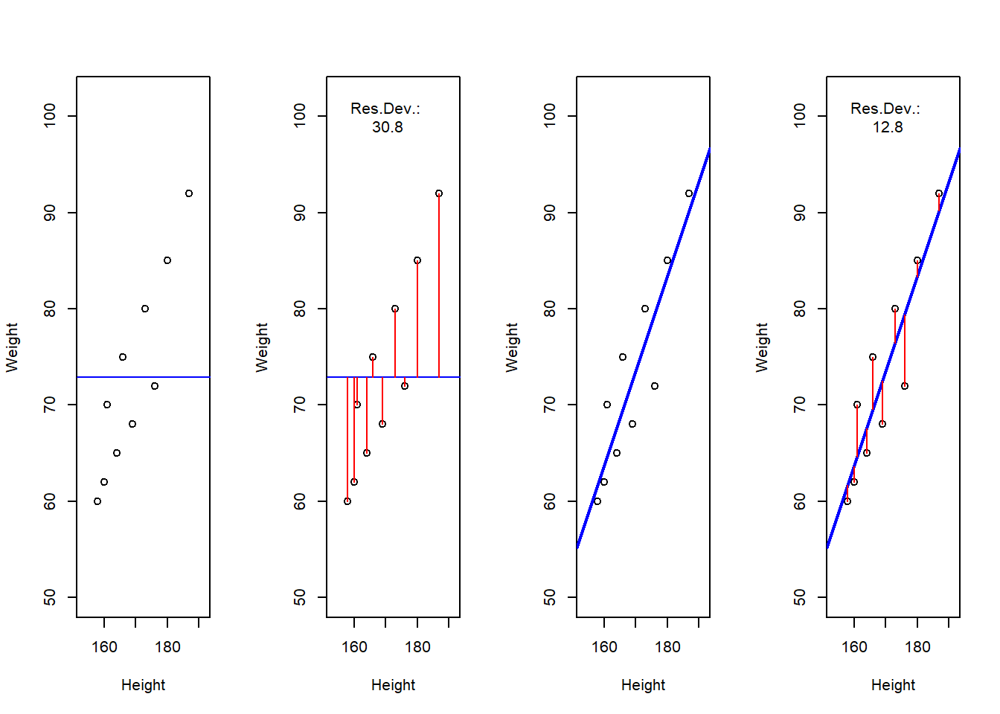
A word about standard errors (SE) is in order here because most commonly used statistics programs will provide SE values when reporting regression models. The SE is a measure that tells us how much the coefficients were to vary if the same regression were applied to many samples from the same population. A relatively small SE value therefore indicates that the coefficients will remain very stable if the same regression model is fitted to many different samples with identical parameters. In contrast, a large SE tells you that the model is volatile and not very stable or reliable as the coefficients vary substantially if the model is applied to many samples.
Example 1: Preposition Use across Real-Time
We will now turn to our first example. In this example, we will investigate whether the frequency of prepositions has changed from Middle English to Late Modern English. The reasoning behind this example is that Old English was highly synthetic compared with Present-Day English which comparatively analytic. In other words, while Old English speakers used case to indicate syntactic relations, speakers of Present-Day English use word order and prepositions to indicate syntactic relationships. This means that the loss of case had to be compensated by different strategies and maybe these strategies continued to develop and increase in frequency even after the change from synthetic to analytic had been mostly accomplished. And this prolonged change in compensatory strategies is what this example will focus on.
The analysis is based on data extracted from the Penn Corpora of Historical English (see http://www.ling.upenn.edu/hist-corpora/), that consists of 603 texts written between 1125 and 1900. In preparation of this example, all elements that were part-of-speech tagged as prepositions were extracted from the PennCorpora.
Then, the relative frequencies (per 1,000 words) of prepositions per text were calculated. This frequency of prepositions per 1,000 words represents our dependent variable. In a next step, the date when each letter had been written was extracted. The resulting two vectors were combined into a table which thus contained for each text, when it was written (independent variable) and its relative frequency of prepositions (dependent or outcome variable).
A regression analysis will follow the steps described below: 1. Extraction and processing of the data 2. Data visualization 3. Applying the regression analysis to the data 4. Diagnosing the regression model and checking whether or not basic model assumptions have been violated.
In a first step, we load the libraries and functions.
# load libraries
library(car)
library(dplyr)
library(ggplot2)
library(knitr)
library(QuantPsyc)
library(DT)
# load functions
source("https://slcladal.github.io/rscripts/multiplot.r")
source("https://slcladal.github.io/rscripts/slrsummary.r")After preparing our session, we can now load and inspect the data to get a first impression of its properties.
# load data
slrdata <- read.delim("https://slcladal.github.io/data/lmmdata.txt", header = TRUE)
# inspect data
datatable(slrdata, rownames = FALSE, filter="none", options = list(pageLength = 10, scrollX=T))Inspecting the data is very important because it can happen that a data set may not load completely or that variables which should be numeric have been converted to character variables. If unchecked, then such issues could go unnoticed and cause trouble.
We will now plot the data to get a better understanding of what the data looks like.
ggplot(slrdata, aes(Date, Prepositions)) +
geom_point() +
theme_bw() +
labs(x = "Year") +
labs(y = "Prepositions per 1,000 words") +
geom_smooth()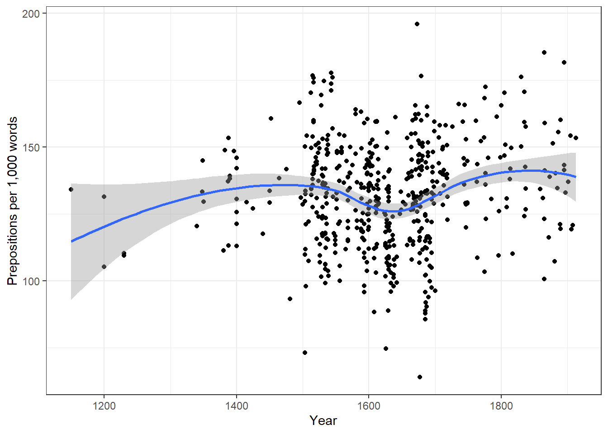
ggplot(slrdata, aes(Date, Prepositions)) +
geom_point() +
theme_bw() +
labs(x = "Year") +
labs(y = "Prepositions per 1,000 words") +
geom_smooth(method = "lm") # with linear model smoothing!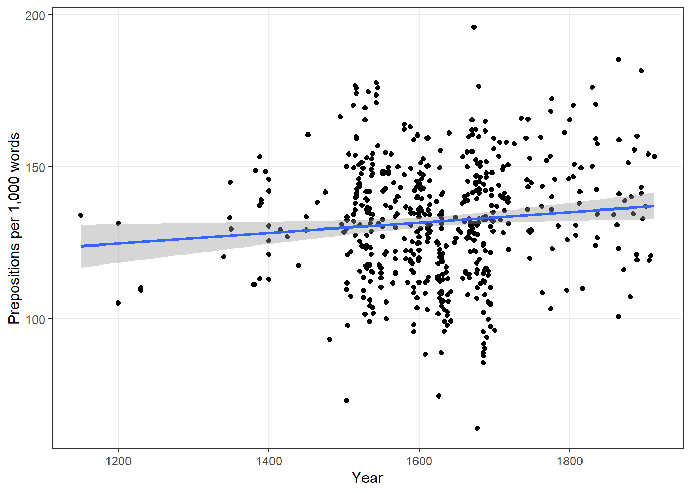
Before beginning with the regression analysis, we will scale the year. We scale by subtracting each value from the mean of year. This can be useful when dealing with numeric variables because if we did not scale year, we would get estimated values for year 0 (a year when English did not even exist yet). If a variable is scaled, the regression provides estimates of the model refer to the mean of that numeric variable. In other words, scaling can eb very helpful, especially with respect to the interpretation of the results that regression models report.
# scale date
slrdata$Date <- slrdata$Date - mean(slrdata$Date) We will now begin the regression analysis by generating a first regression model. and inspect its results.
# create initial model
m1.lm <- lm(Prepositions ~ Date, data = slrdata)
# inspect results
summary(m1.lm)##
## Call:
## lm(formula = Prepositions ~ Date, data = slrdata)
##
## Residuals:
## Min 1Q Median 3Q Max
## -69.101 -13.855 0.578 13.321 62.858
##
## Coefficients:
## Estimate Std. Error t value Pr(>|t|)
## (Intercept) 1.322e+02 8.386e-01 157.625 <2e-16 ***
## Date 1.732e-02 7.267e-03 2.383 0.0175 *
## ---
## Signif. codes: 0 '***' 0.001 '**' 0.01 '*' 0.05 '.' 0.1 ' ' 1
##
## Residual standard error: 19.43 on 535 degrees of freedom
## Multiple R-squared: 0.01051, Adjusted R-squared: 0.008657
## F-statistic: 5.681 on 1 and 535 DF, p-value: 0.0175The summary output starts by repeating the regression equation. Then, the model provides the distribution of the residuals. The residuals should be sitributed normally with the Min and Max as well as the 1Q (first quartile) and 3Q (third quartile) being similar or ideally identical. In our case, the values are very similar which suggests that the residuals are distributed evenly and follow a normal distribution. The next part of the repost is the coefficients table. The Estimate for the intercept is the value where the regression line crosses the y-axis. The estimate for Date represents the slope of the regression line and tells us that with each year, the predicted frequency of prepositions incerase by .01732 prepositions. The t-value is the Estimate divided by the standard error (Std. Error). Based on the t-value, the p-value can be calculated manually as shown below.
# use pt function (which uses t-values and the degrees of freedom)
2*pt(-2.383, nrow(slrdata)-1)## [1] 0.01751964The R2-values tell us how much variance is explained by our model compared to the overall variance (0.0105 means that our model explains only 1.05 percent of the variance - which is a tiny amount). The adjusted R2-value tell us how much variance the model would explain if we applied the model to new data of the same nature (which data points taken from the same population). Or, to be more precise, the adjusted R2 takes the number of predictors into account: if a model contains predictors that do not explain much variance, then the adjusted R2 will be lower than the multiple R2 as the former penalizes models for having superfluous predictors. If there is a big difference between the two R2-values, then the model is overfitted which is not good. The F-statistic and the associated p-value tell us that the model, despite explaining almost no variance, is still significantly better than an intercept-only base-line model (or using the overall mean to predict the frequency of prepositions per text).
We can test this and also see where the F-values comes from by comparing the
# create intercept-only base-line model
m0.lm <- lm(Prepositions ~ 1, data = slrdata)
# compare the base-line and the more saturated model
anova(m1.lm, m0.lm, test = "F")## Analysis of Variance Table
##
## Model 1: Prepositions ~ Date
## Model 2: Prepositions ~ 1
## Res.Df RSS Df Sum of Sq F Pr(>F)
## 1 535 202058
## 2 536 204204 -1 -2145.6 5.6809 0.0175 *
## ---
## Signif. codes: 0 '***' 0.001 '**' 0.01 '*' 0.05 '.' 0.1 ' ' 1The F- and p-values are exactly those reported by the summary which shows where the F-values comes from and what it means; namely it denote the difference between the base-line and the more saturated model.
The degrees of freedom associated with the residual standard error are the number of cases in the model minus the number of predictors (including the intercept). The residual standard error is square root of the sum of the squared residuals of the model divided by the degrees of freedom. Have a look at he following to clear this up:
# DF = N - number of predictors (including intercept)
DegreesOfFreedom <- nrow(slrdata)-length(coef(m1.lm))
# sum of the squared residuals
SumSquaredResiduals <- sum(resid(m1.lm)^2)
# Residual Standard Error
sqrt(SumSquaredResiduals/DegreesOfFreedom); DegreesOfFreedom## [1] 19.43396## [1] 535We will now check if mathematical assumptions have been violated (homogeneity of variance) or whether the data contains outliers. We check this using diagnostic plots.
# plot model: 3 plots per row in one window
par(mfrow = c(1, 3))
plot(resid(m1.lm))
plot(rstandard(m1.lm))
plot(rstudent(m1.lm)); par(mfrow = c(1, 1)) # restore default parameters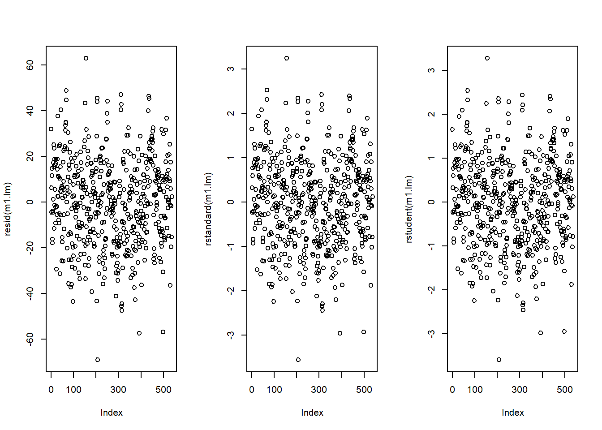
The left graph shows the residuals of the model (i.e., the differences between the observed and the values predicted by the regression model). The problem with this plot is that the residuals are not standardized and so they cannot be compared to the residuals of other models. To remedy this deficiency, residuals are normalized by dividing the residuals by their standard deviation. Then, the normalized residuals can be plotted against the observed values (centre panel). In this way, not only are standardized residuals obtained, but the values of the residuals are transformed into z-values, and one can use the z-distribution to find problematic data points. There are three rules of thumb regarding finding problematic data points through standardized residuals (Field, Miles, and Field 2012, 268–69):
Points with values higher than 3.29 should be removed from the data.
If more than 1% of the data points have values higher than 2.58, then the error rate of our model is too high.
If more than 5% of the data points have values greater than 1.96, then the error rate of our model is too high.
The right panel shows the * studentized residuals* (adjusted predicted values: each data point is divided by the standard error of the residuals). In this way, it is possible to use Student’s t-distribution to diagnose our model.
Adjusted predicted values are residuals of a special kind: the model is calculated without a data point and then used to predict this data point. The difference between the observed data point and its predicted value is then called the adjusted predicted value. In summary, studentized residuals are very useful because they allow us to identify influential data points.
The plots show that there are two potentially problematic data points (the top-most and bottom-most point). These two points are clearly different from the other data points and may therefore be outliers. We will test later if these points need to be removed.
We will now generate more diagnostic plots.
par(mfrow = c(2, 2)) # plot window: 2 plots/row, 2 plots/column
plot(m1.lm); par(mfrow = c(1, 1)) # restore normal plot window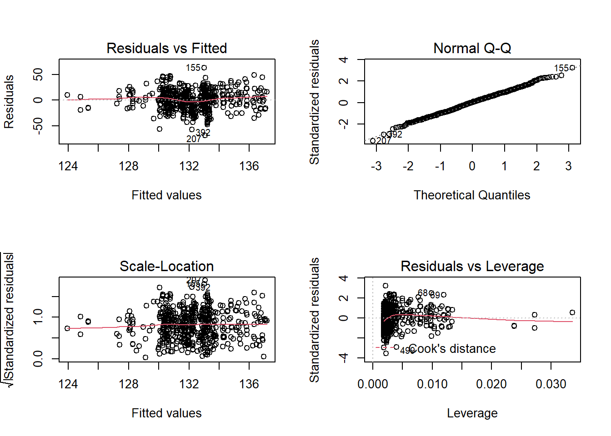
The diagnostic plots are very positive and we will go through why this is so for each panel. The graph in the upper left panel is useful for finding outliers or for determining the correlation between residuals and predicted values: when a trend becomes visible in the line or points (e.g., a rising trend or a zigzag line), then this would indicate that the model would be problematic (in such cases, it can help to remove data points that are too influential (outliers)).
The graphic in the upper right panel indicates whether the residuals are normally distributed (which is desirable) or whether the residuals do not follow a normal distribution. If the points lie on the line, the residuals follow a normal distribution. For example, if the points are not on the line at the top and bottom, it shows that the model does not predict small and large values well and that it therefore does not have a good fit.
The graphic in the lower left panel provides information about homoscedasticity. Homoscedasticity means that the variance of the residuals remains constant and does not correlate with any independent variable. In unproblematic cases, the graphic shows a flat line. If there is a trend in the line, we are dealing with heteroscedasticity, that is, a correlation between independent variables and the residuals, which is very problematic for regressions.
The graph in the lower right panel shows problematic influential data points that disproportionately affect the regression (this would be problematic). If such influential data points are present, they should be either weighted (one could generate a robust rather than a simple linear regression) or they must be removed. The graph displays Cook’s distance, which shows how the regression changes when a model without this data point is calculated. The cook distance thus shows the influence a data point has on the regression as a whole. Data points that have a Cook’s distance value greater than 1 are problematic (Field, Miles, and Field 2012, 269).
The so-called leverage is also a measure that indicates how strongly a data point affects the accuracy of the regression. Leverage values range between 0 (no influence) and 1 (strong influence: suboptimal!). To test whether a specific data point has a high leverage value, we calculate a cut-off point that indicates whether the leverage is too strong or still acceptable. The following two formulas are used for this:
\[\begin{equation} \frac{3(k + 1)}{n} \end{equation}\]
or
\[\begin{equation} \frac{2(k + 1)}{n} \end{equation}\]
We will look more closely at leverage in the context of multiple linear regression and will therefore end the current analysis by summarizing the results of the regression analysis in a table.
# create summary table
slrresults <- slrsummary(m1.lm)
# show summary table
slrresults| Estimate | Pearson’s r | Std. Error | t value | Pr(>|t|) | P-value sig. | |
|---|---|---|---|---|---|---|
| (Intercept) | 132.19 | 0.84 | 157.62 | 0 | p < .001*** | |
| Date | 0.02 | 0.1 | 0.01 | 2.38 | 0.0175 | p < .05* |
| Model statistics | Value | |||||
| Number of cases in model | 537 | |||||
| Residual standard error on 535 DF | 19.43 | |||||
| Multiple R-squared | 0.0105 | |||||
| Adjusted R-squared | 0.0087 | |||||
| F-statistic (1, 535) | 5.68 | |||||
| Model p-value | 0.0175 |
Typically, the results of regression analyses are presented in such tables as they include all important measures of model quality and significance, as well as the magnitude of the effects.
In addition, the results of simple linear regressions should be summarized in writing. An example of how the results of a regression analysis can be written up is provided below.
A simple linear regression has been fitted to the data. A visual assessment of the model diagnostic graphics did not indicate any problematic or disproportionately influential data points (outliers) and performed significantly better compared to an intercept-only base line model but only explained .87 percent of the vraiance (Adjusted R2: .0087, F-statistic (1, 535): 5,68, p-value: 0.0175*). The final minimal adequate linear regression model is based on 537 data points and confirms a significant and positive correlation between the year in which the text was written and the relative frequency of prepositions (coefficient estimate: .02, SE: 0.01, t-value: 2.38, p-value: .0175*).
Example 2: Teaching Styles
In the previous example, we dealt with two numeric variables, while the following example deals with a categorical independent variable and a numeric dependent variable. The ability for regressions to handle very different types of variables makes regressions a widely used and robust method of analysis.
In this example, we are dealing with two groups of students that have been randomly assigned to be exposed to different teaching methods. Both groups undergo a language learning test after the lesson with a maximum score of 20 points.
The question that we will try to answer is whether the students in group A have performed significantly better than those in group B which would indicate that the teaching method to which group A was exposed works better than the teaching method to which group B was exposed.
Let’s move on to implementing the regression in “R”. In a first step, we load the data set and inspect its structure.
# load data
slrdata2 <- read.delim("https://slcladal.github.io/data/slrdata2.txt", sep = "\t", header = T)
# inspect data
head(slrdata2)## Group Score
## 1 A 15
## 2 A 12
## 3 A 11
## 4 A 18
## 5 A 15
## 6 A 15Now, we graphically display the data. In this case, a boxplot represents a good way to visualize the data.
# extract means
means <- slrdata2 %>%
dplyr::group_by(Group) %>%
dplyr::summarise(Mean = round(mean(Score), 1), SD = round(sd(Score), 1))## `summarise()` ungrouping output (override with `.groups` argument)# start plot
ggplot(slrdata2, aes(Group, Score)) +
geom_boxplot(fill=c("orange", "darkgray")) +
geom_text(data = means, aes(label = paste("M = ", Mean, sep = ""), y = 1)) +
geom_text(data = means, aes(label = paste("SD = ", SD, sep = ""), y = 0)) +
theme_bw(base_size = 15) +
labs(x = "Group") +
labs(y = "Test score (Points)", cex = .75) +
coord_cartesian(ylim = c(0, 20)) +
guides(fill = FALSE) Language test data
The data indicate that group A did significantly better than group B. We will test this impression by generating the regression model and creating the model and extracting the model summary.
# generate regression model
m2.lm <- lm(Score ~ Group, data = slrdata2)
# inspect results
summary(m2.lm) ##
## Call:
## lm(formula = Score ~ Group, data = slrdata2)
##
## Residuals:
## Min 1Q Median 3Q Max
## -6.767 -1.933 0.150 2.067 6.233
##
## Coefficients:
## Estimate Std. Error t value Pr(>|t|)
## (Intercept) 14.9333 0.5346 27.935 < 2e-16 ***
## GroupB -3.1667 0.7560 -4.189 9.67e-05 ***
## ---
## Signif. codes: 0 '***' 0.001 '**' 0.01 '*' 0.05 '.' 0.1 ' ' 1
##
## Residual standard error: 2.928 on 58 degrees of freedom
## Multiple R-squared: 0.2322, Adjusted R-squared: 0.219
## F-statistic: 17.55 on 1 and 58 DF, p-value: 9.669e-05The model summary reports that Groups B performed significantly (Pr(>|t|) is smaller than .001 as indicated by the three * after the p-values) comapred with Groups A (the Estmate is negative). We will now create the diagnostic graphics.
par(mfrow = c(1, 3)) # plot window: 1 plot/row, 3 plots/column
plot(resid(m2.lm)) # generate diagnostic plot
plot(rstandard(m2.lm)) # generate diagnostic plot
plot(rstudent(m2.lm)); par(mfrow = c(1, 1)) # restore normal plot window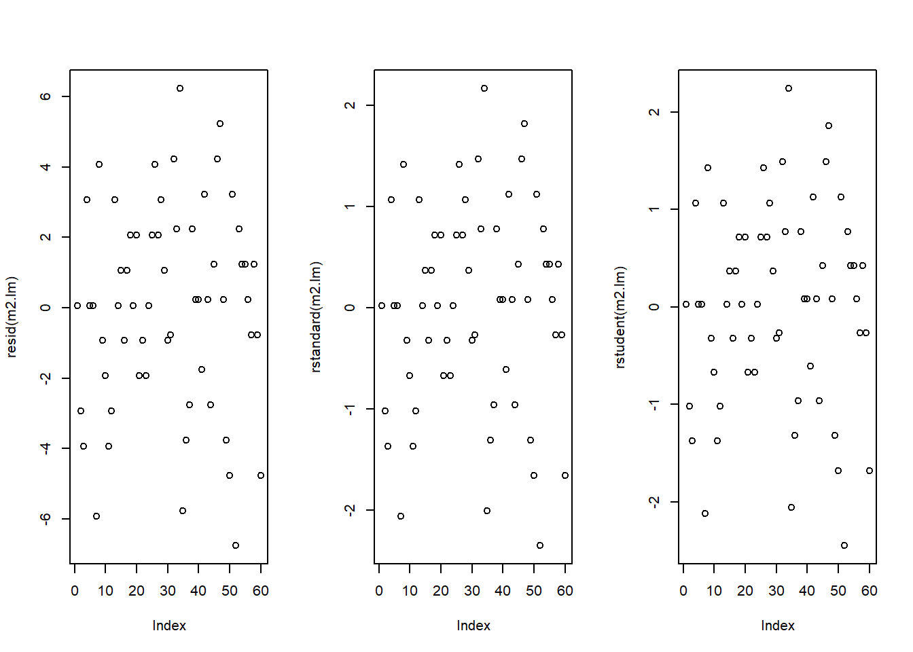
The graphics do not indicate outliers or other issues, so we can continue with more diagnostic graphics.
par(mfrow = c(2, 2)) # generate a plot window with 2x2 panels
plot(m2.lm); par(mfrow = c(1, 1)) # restore normal plot window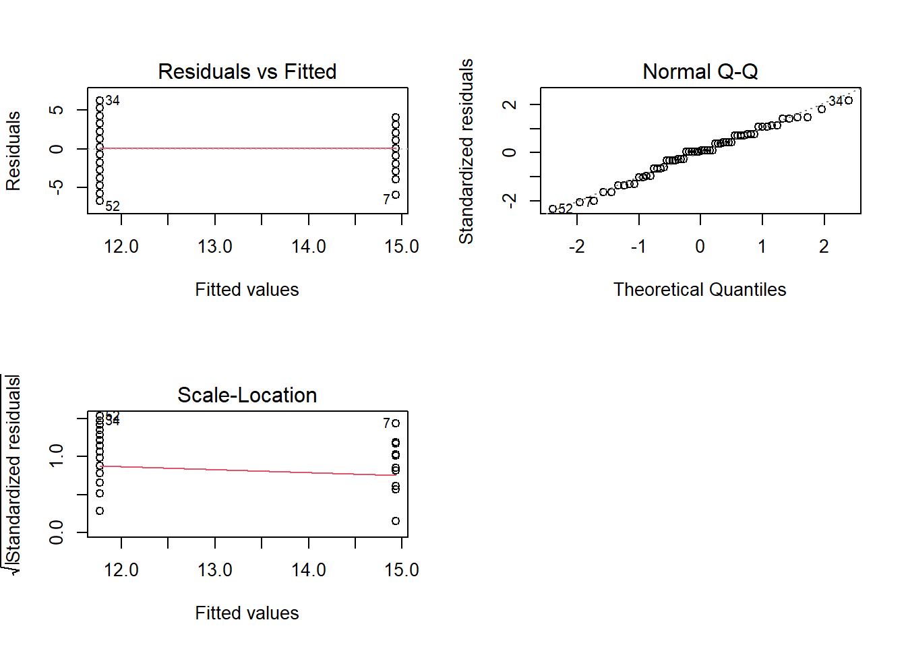
These graphics also show no problems. In this case, the data can be summarized in the next step.
# tabulate results
slrresults2 <- slrsummary(m2.lm)
slrresults2| Estimate | Pearson’s r | Std. Error | t value | Pr(>|t|) | P-value sig. | |
|---|---|---|---|---|---|---|
| (Intercept) | 14.93 | 0.53 | 27.94 | 0 | p < .001*** | |
| GroupB | -3.17 | 0.48 | 0.76 | -4.19 | 1e-04 | p < .001*** |
| Model statistics | Value | |||||
| Number of cases in model | 60 | |||||
| Residual standard error on 58 DF | 2.93 | |||||
| Multiple R-squared | 0.2322 | |||||
| Adjusted R-squared | 0.219 | |||||
| F-statistic (1, 58) | 17.55 | |||||
| Model p-value | 1e-04 |
The results of this second simple linear regressions can be summarized as follows:
A simple linear regression was fitted to the data. A visual assessment of the model diagnostics did not indicate any problematic or disproportionately influential data points (outliers). The final linear regression model is based on 60 data points, performed significantly better than an intercept-only base line model (F (1, 58): 17.55, p-value <. 001***), and reported that the model explained 21.9 percent of variance which confirmed a good model fit. According to this final model, group A scored significantly better on the language learning test than group B (coefficient: -3.17, SE: 0.48, t-value: -4.19, p-value <. 001 ***).
Citation & Session Info
Schweinberger, Martin. 2020. Basic Inferential Statistics with R. Brisbane: The University of Queensland. url: https://slcladal.github.io/basicstatzchi.html (Version 2020.09.27).
@manual{schweinberger2020basicstatz,
author = {Schweinberger, Martin},
title = {Basic Inferential Statistics using R},
note = {https://slcladal.github.io/basicstatzchi.html},
year = {2020},
organization = "The University of Queensland, School of Languages and Cultures},
address = {Brisbane},
edition = {2020/09/24}
}sessionInfo()## R version 4.0.2 (2020-06-22)
## Platform: x86_64-w64-mingw32/x64 (64-bit)
## Running under: Windows 10 x64 (build 18362)
##
## Matrix products: default
##
## locale:
## [1] LC_COLLATE=German_Germany.1252 LC_CTYPE=German_Germany.1252
## [3] LC_MONETARY=German_Germany.1252 LC_NUMERIC=C
## [5] LC_TIME=German_Germany.1252
##
## attached base packages:
## [1] stats graphics grDevices utils datasets methods base
##
## other attached packages:
## [1] QuantPsyc_1.5 MASS_7.3-51.6 boot_1.3-25
## [4] car_3.0-9 carData_3.0-4 dplyr_1.0.2
## [7] cfa_0.10-0 ggplot2_3.3.2 gridExtra_2.3
## [10] fGarch_3042.83.2 fBasics_3042.89.1 timeSeries_3062.100
## [13] timeDate_3043.102 kableExtra_1.2.1 knitr_1.30
## [16] DT_0.15
##
## loaded via a namespace (and not attached):
## [1] Rcpp_1.0.5 lattice_0.20-41 digest_0.6.25 R6_2.4.1
## [5] cellranger_1.1.0 evaluate_0.14 highr_0.8 httr_1.4.2
## [9] pillar_1.4.6 rlang_0.4.7 spatial_7.3-12 curl_4.3
## [13] readxl_1.3.1 rstudioapi_0.11 data.table_1.13.0 Matrix_1.2-18
## [17] rmarkdown_2.3 splines_4.0.2 labeling_0.3 webshot_0.5.2
## [21] stringr_1.4.0 foreign_0.8-80 htmlwidgets_1.5.1 munsell_0.5.0
## [25] compiler_4.0.2 xfun_0.16 pkgconfig_2.0.3 mgcv_1.8-31
## [29] htmltools_0.5.0 tidyselect_1.1.0 tibble_3.0.3 rio_0.5.16
## [33] viridisLite_0.3.0 crayon_1.3.4 withr_2.3.0 grid_4.0.2
## [37] nlme_3.1-148 jsonlite_1.7.1 gtable_0.3.0 lifecycle_0.2.0
## [41] magrittr_1.5 scales_1.1.1 zip_2.1.1 stringi_1.5.3
## [45] farver_2.0.3 xml2_1.3.2 ellipsis_0.3.1 generics_0.0.2
## [49] vctrs_0.3.4 openxlsx_4.2.2 tools_4.0.2 forcats_0.5.0
## [53] glue_1.4.2 purrr_0.3.4 hms_0.5.3 crosstalk_1.1.0.1
## [57] abind_1.4-5 yaml_2.2.1 colorspace_1.4-1 rvest_0.3.6
## [61] haven_2.3.1References
Baayen, R Harald. 2008. Analyzing Linguistic Data. A Practical Introduction to Statistics Using R. Cambridge: Cambridge University press.
Bühner, Markus, and Matthias Ziegler. 2009. Statistik Für Psychologen Und Sozialwissenschaftler. München: Pearson Studium.
Cochran, W. G. 1954. “Some Methods for Strengthening the Common $$^2tests.” Biometrics 10: 417–51.
Field, Andy, Jeremy Miles, and Zoe Field. 2012. Discovering Statistics Using R. Sage.
Gries, Stefan Th. 2009. Statistics for Linguistics Using R: A Practical Introduction. Berlin & New York: Mouton de Gruyter.
Gries, Stefan Thomas. 2014. “Frequency Tables: Tests, Effect Sizes, and Explorations.” In Polysemy and Synonymy: Corpus Methods and Applications in Cognitive Linguistics., edited by Dylan Glynn and Justyna Robinson, 365–89. Amsterdam: John Benjamins.
Levshina, Natalia. 2015. How to Do Linguistics with R: Data Exploration and Statistical Analysis. Amsterdam: John Benjamins.
Wilcox, Rand R. 2009. Basic Statistics: Understanding Conventional Methods and Modern Insights. Oxford University Press.